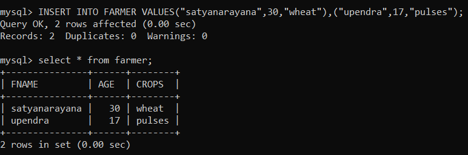
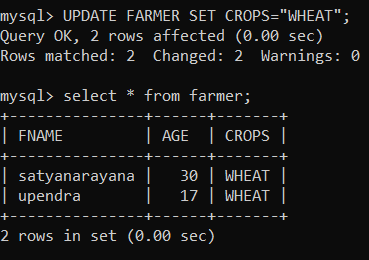
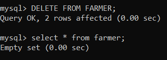

DML Commands
DML is short name of Data Manipulation Language which deals with data manipulation
and includes most common SQL statements such SELECT, INSERT, UPDATE,
DELETE, etc., and it is used to store, modify, retrieve, delete and
update data in a database.
INSERT insert is used to add the rows values to the column data

UPDATE update used to set the column data

DELETE – delete used to remove the data
